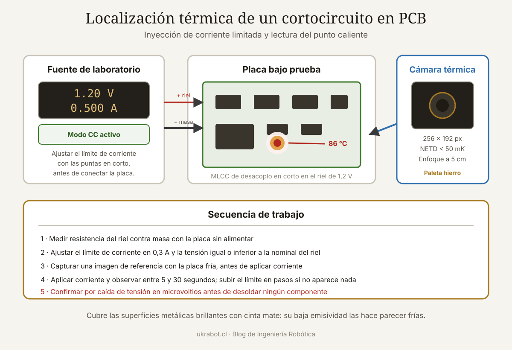

Qué cubre esta guía
Por qué funciona: la física del punto caliente
Un cortocircuito es un camino de baja resistencia por donde la corriente circula sin hacer trabajo útil. Toda esa energía se convierte en calor, y se concentra exactamente donde está la resistencia: en el componente o en la unión defectuosa.
P = I² × R
Ejemplo: condensador de desacoplo en corto con 0,5 Ω residual
Corriente inyectada: 1 A
P = 1² × 0,5 = 0,5 W disipados en un encapsulado 0402
Un componente 0402 tiene una superficie de apenas 0,5 mm².
Medio vatio en esa superficie eleva su temperatura decenas
de grados en pocos segundos.La cámara térmica no detecta el corto: detecta dónde se está convirtiendo la energía en calor. Y como la disipación se concentra en el punto de menor sección y mayor resistencia relativa, ese punto destaca sobre el resto de la placa con una claridad que ninguna inspección visual consigue.
Qué cámara necesitas realmente
Las especificaciones que importan para electrónica son distintas de las que se anuncian para termografía de edificios.
| Especificación | Qué significa | Mínimo útil en PCB |
|---|---|---|
| Resolución del sensor | Píxeles térmicos reales | 160 × 120; ideal 256 × 192 |
| NETD (sensibilidad térmica) | Menor diferencia de temperatura detectable | < 50 mK |
| Distancia mínima de enfoque | Cuán cerca puede estar del objeto | Crítico: < 10 cm o con macro |
| Campo de visión | Ángulo abarcado | Estrecho es mejor para detalle |
| Frecuencia de imagen | Cuadros por segundo | 9 Hz basta; 25 Hz es más cómodo |
| Rango de temperatura | Mínima y máxima medibles | −20 a 400 °C sobra |
La resolución en términos prácticos
Cámara de 160 × 120 a 10 cm de distancia, campo de visión de 50°:
Área cubierta ≈ 9,3 × 7,0 cm
Tamaño de cada píxel ≈ 0,58 mm
Un componente 0402 (1,0 × 0,5 mm) ocupa menos de 2 píxeles.
Detectable, pero sin poder distinguirlo del vecino.
Cámara de 256 × 192 con lente macro a 5 cm:
Área cubierta ≈ 4,6 × 3,5 cm
Tamaño de cada píxel ≈ 0,18 mm
El mismo componente ocupa unos 15 píxeles: identificación inequívoca.Categorías de equipo
| Tipo | Resolución típica | Ventaja | Inconveniente |
|---|---|---|---|
| Módulo para móvil (USB-C) | 256 × 192 | Excelente relación precio-prestaciones | Depende del teléfono y su software |
| Cámara compacta dedicada | 192 × 144 a 256 × 192 | Autónoma, con pantalla propia | Más cara a igual resolución |
| Cámara de banco con macro | 384 × 288 o superior | Precisión de nivel profesional | Coste elevado |
| Sensor MLX90640 con microcontrolador | 32 × 24 | Muy barato, proyecto propio | Resolución insuficiente para SMD pequeño |
Para un taller de reparación o un aficionado serio, un módulo de 256 × 192 conectado al teléfono ofrece hoy la mejor relación entre capacidad y precio. La diferencia frente a un equipo de banco existe, pero no justifica el salto de precio salvo en uso profesional intensivo.
El procedimiento paso a paso
1. Identificar el riel en corto
Con la placa desconectada, en modo resistencia o continuidad:
Medir entre el riel sospechoso y masa.
Interpretación orientativa:
0 a 5 Ω → corto franco, muy localizable por calor
5 a 50 Ω → corto parcial, localizable con paciencia
50 a 500 Ω → fuga; el calor puede ser insuficiente
> 1 kΩ → probablemente normal según el rielTen presente que muchos rieles muestran resistencias bajas de forma legítima por la cantidad de condensadores de desacoplo y por las cargas conectadas. Compara con una placa sana del mismo modelo cuando sea posible.
2. Preparar la fuente de alimentación
Este es el paso que distingue un diagnóstico limpio de una placa destruida. Necesitas una fuente de laboratorio con limitación de corriente ajustable.
Configuración inicial recomendada:
Tensión: la nominal del riel (3,3 V, 5 V, 12 V...) o menos
Corriente: empezar en 0,3 A
Procedimiento:
1. Ajustar el límite de corriente con las puntas cortocircuitadas
2. Conectar al riel afectado respetando la polaridad
3. La fuente entrará en modo de corriente constante (CC)
4. Observar la tensión resultante: será muy baja si el corto es franco
5. Subir la corriente gradualmente solo si no aparece calor3. Observar con la cámara
- Enfoca la zona del riel antes de aplicar corriente y captura una imagen de referencia con la placa fría.
- Aplica la corriente y observa en directo. El punto caliente suele aparecer en 5 a 30 segundos.
- Usa una paleta de color con buen contraste (arcoíris o hierro) y activa el ajuste automático de escala.
- Si nada aparece en un minuto, sube el límite de corriente en pasos pequeños y vuelve a esperar.
- Cuando localices el punto, corta la alimentación y captura la imagen para documentar.
4. Confirmar antes de desoldar
Un punto caliente es un candidato, no una sentencia. Antes de retirar el componente:
- Verifica que el componente caliente pertenece efectivamente al riel en corto.
- Comprueba que no se trata de un regulador o un componente que se calienta por diseño.
- Mide la caída de tensión en microvoltios entre ese punto y otros del mismo riel: el mínimo confirma la ubicación.
- Retira el componente y vuelve a medir la resistencia del riel. Si el corto desapareció, era ese.
Emisividad: la trampa que falsea las lecturas
Una cámara térmica no mide temperatura: mide radiación infrarroja emitida, y la convierte a temperatura asumiendo un valor de emisividad. La emisividad es la eficiencia con la que un material emite radiación, entre 0 y 1. Materiales distintos a la misma temperatura se ven diferentes.
| Material en una PCB | Emisividad aproximada | Efecto en la imagen |
|---|---|---|
| Máscara de soldadura (verde, mate) | 0,90 - 0,95 | Lectura fiable |
| Encapsulado plástico negro de un CI | 0,90 - 0,95 | Lectura fiable |
| Cerámica de condensadores MLCC | 0,85 - 0,92 | Lectura aceptable |
| Estaño de soldadura brillante | 0,05 - 0,10 | Aparece mucho más frío de lo que está |
| Cobre pulido o plano de masa expuesto | 0,03 - 0,10 | Muy engañoso |
| Blindaje metálico | 0,05 - 0,20 | Refleja el entorno, incluido tu propio calor |
Consecuencia práctica: una junta de soldadura en corto puede parecer fría en la cámara mientras el plástico del componente a su lado se ve caliente. Y una superficie metálica pulida puede mostrar tu propio reflejo térmico como si fuera un punto caliente.
Cómo corregirlo
- Cinta de aislar mate sobre las zonas metálicas grandes: uniforma la emisividad a ~0,95.
- Una capa muy fina de flux sobre la zona bajo estudio: además de uniformar la emisividad, ayuda con el siguiente truco.
- Observa desde varios ángulos: un reflejo cambia de posición al mover la cámara, un punto caliente real no.
- Confía en el patrón, no en el valor absoluto: para localizar un corto te interesa dónde está el máximo, no cuántos grados marca.
Alternativas cuando no tienes cámara térmica
Alcohol isopropílico: el método clásico
Funciona sorprendentemente bien y cuesta prácticamente nada. Aplica una capa fina de alcohol isopropílico sobre la zona sospechosa e inyecta corriente: el alcohol se evapora primero justo encima del punto caliente, dejando una mancha seca que delata la posición.
Procedimiento:
1. Aplicar IPA con un pincel sobre toda la zona del riel
2. Inyectar corriente con la fuente limitada
3. Observar con lupa y buena luz rasante
4. El primer punto en secarse es el candidato
Ventaja: coste casi nulo, resolución excelente
Límite: requiere que el punto supere unos 40 °C
y hay que observar en el momento exactoEl dedo: menos ridículo de lo que parece
Con la placa alimentada a baja corriente, pasar el dedo por los componentes localiza puntos calientes con una sensibilidad razonable. Es la técnica más antigua del banco de reparación. Sus límites: no sirve por encima de 60 °C sin quemarte, y no distingue entre componentes contiguos.
Medida de caída de tensión en microvoltios
Un multímetro con resolución de microvoltios permite triangular el corto sin calor. Inyectas corriente por el riel y mides la tensión entre distintos puntos del plano: la corriente circula hacia el corto, y la caída disminuye conforme te acercas a él.
Con 1 A inyectado por un plano de cobre:
Punto A: 480 µV
Punto B: 310 µV
Punto C: 90 µV ← el corto está cerca de aquí
Punto D: 250 µV
Se avanza siempre hacia el valor menor, como un mapa de gradientes.Es un método lento pero muy preciso, y funciona con cortos de resistencia tan baja que apenas generan calor. Se complementa bien con la cámara térmica: la cámara acota la zona, los microvoltios confirman el punto exacto.
Casos típicos y su firma térmica
| Fallo | Firma térmica | Tiempo de aparición | Nota |
|---|---|---|---|
| MLCC de desacoplo en corto | Punto muy localizado e intenso | 5 a 15 s | El caso más frecuente y el más fácil |
| MOSFET de potencia perforado | Zona amplia y caliente | 3 a 10 s | Suele verse también daño físico |
| Circuito integrado con entrada dañada | Calor difuso en todo el encapsulado | 10 a 40 s | Difícil de distinguir del consumo normal |
| Puente de estaño entre pistas | Línea caliente estrecha | 5 a 20 s | Muy visible; revisa bajo el CI si no aparece |
| Diodo TVS disparado | Punto caliente en el borde de la placa | 3 a 10 s | Suele indicar una sobretensión previa |
| Corrosión por líquido bajo un componente | Área caliente irregular y extensa | 15 a 60 s | Limpiar con IPA y reevaluar |
| Vía o pista dañada en capa interna | Calor en un punto sin componente | 20 a 60 s | El caso más difícil de reparar |
| Fuga de alta impedancia (> 500 Ω) | Ninguna o casi ninguna | — | El método no aplica; usar microvoltios |
Falsos positivos que debes reconocer
- Reguladores lineales y de conmutación: se calientan porque están trabajando, no porque estén averiados.
- Resistencias de potencia y shunts de medida: disipan por diseño.
- Reflejos en superficies metálicas: cambian al mover la cámara.
- Calor conducido por el plano de cobre: el cobre distribuye el calor y puede hacer que un componente cercano al culpable parezca ser el origen. Busca siempre el máximo del gradiente.
- Tu propio aliento o la lámpara del banco: apaga las fuentes de calor cercanas antes de medir.
Seguridad y buenas prácticas
- Protección antiestática: pulsera conectada a tierra y tapete disipativo. Los circuitos integrados modernos se dañan con descargas que ni siquiera notas.
- Empieza siempre con el límite de corriente bajo y súbelo en pasos. Es más rápido esperar treinta segundos que reemplazar un componente que destruiste al inyectar de golpe 5 A.
- Ventilación: los componentes en fallo pueden liberar humos tóxicos. Un extractor sobre el banco es una inversión sensata.
- Documenta con imágenes: captura la térmica y la visible del mismo encuadre. Al reparar placas del mismo modelo, ese archivo se convierte en una base de datos de fallos recurrentes.
- Limpia la placa con IPA antes de inspeccionar: los residuos de flux y la suciedad alteran la emisividad y pueden crear fugas superficiales que confunden el diagnóstico.
Flujo de trabajo recomendado
- Inspección visual con lupa y luz rasante. Muchos fallos se ven a simple vista.
- Medida de resistencia de todos los rieles contra masa. Anotar valores.
- Comparar con una placa sana o con la documentación si existe.
- Inyección de corriente limitada en el riel sospechoso.
- Localización térmica del punto caliente.
- Confirmación por caída de tensión en microvoltios.
- Retirada del componente y verificación de que el corto desapareció.
- Reemplazo, limpieza y prueba funcional completa.
Conclusión
La cámara térmica no es un instrumento mágico: es un acelerador. Convierte un proceso de búsqueda que podía llevar horas de desoldadura sistemática en una inspección de un minuto, y lo hace sin dañar la placa. Pero solo funciona si la usas junto con una fuente limitada en corriente y entendiendo qué estás viendo.
Los tres puntos que determinan el éxito del método son: una cámara que enfoque de cerca —la resolución importa menos que la distancia mínima de enfoque—, limitación de corriente correctamente ajustada antes de conectar nada, y conciencia de la emisividad para no perseguir reflejos en el estaño.
Y recuerda su límite real: los fallos de alta impedancia, por encima de unos 500 ohmios, no generan calor suficiente para verse. En esos casos, el multímetro con resolución de microvoltios sigue siendo la herramienta correcta. Las dos técnicas no compiten; se complementan.
Preguntas frecuentes
¿Qué resolución de cámara térmica necesito para reparar electrónica?
Para componentes SMD de tamaño 0603 o mayor, una cámara de 160 × 120 píxeles con buen enfoque cercano es suficiente. Para trabajar con 0402, 0201 o encapsulados BGA, conviene 256 × 192 con lente macro. Sin embargo, la distancia mínima de enfoque es más determinante que la resolución: una cámara de 256 × 192 que no enfoque por debajo de 30 cm será menos útil que una de 160 × 120 capaz de acercarse a 5 cm.
¿Puedo dañar la placa al inyectar corriente para el diagnóstico?
Sí, si no limitas correctamente la corriente o si superas la tensión nominal del riel. La regla es ajustar el límite de corriente con las puntas cortocircuitadas antes de conectar, empezar con valores bajos del orden de 0,3 A e ir subiendo en pasos. Nunca apliques una tensión superior a la nominal del riel: inyectar 5 V en un riel de núcleo de 1,2 V destruye todos los circuitos integrados conectados, aunque la corriente esté limitada.
¿Sirve un módulo térmico para móvil o necesito una cámara profesional?
Los módulos que se conectan al teléfono por USB-C con sensores de 256 × 192 ofrecen hoy una capacidad más que suficiente para reparación de electrónica, a una fracción del precio de una cámara de banco. Sus limitaciones son la dependencia del software del fabricante y una ergonomía menos cómoda para trabajo prolongado. Para uso profesional intensivo, una cámara dedicada con lente macro y trípode resulta más productiva, pero la diferencia de capacidad diagnóstica es menor de lo que sugiere la diferencia de precio.
¿Por qué no veo ningún punto caliente si el multímetro indica corto?
Las causas más probables son cuatro. Primera: la corriente inyectada es insuficiente, prueba subiendo el límite en pasos. Segunda: el corto está en una capa interna o bajo un componente grande que actúa como disipador y difunde el calor. Tercera: la superficie que observas es metálica brillante y su baja emisividad oculta el calor real, cúbrela con cinta mate. Cuarta: no es un corto franco sino una fuga de alta impedancia que disipa muy poca potencia; en ese caso recurre a la medida de caída de tensión en microvoltios.
¿La emisividad afecta a la localización de un cortocircuito?
Afecta al valor de temperatura que muestra la cámara, pero para localizar un corto lo que importa es el patrón relativo, no la cifra absoluta. El problema real aparece cuando la zona bajo estudio combina materiales de emisividad muy distinta: una junta de soldadura brillante puede verse fría aunque esté a 80 °C, mientras el plástico del componente contiguo se ve caliente. La solución práctica es cubrir las superficies metálicas con cinta mate o aplicar una capa fina de flux para uniformar la emisividad antes de inspeccionar.
¿El método del alcohol isopropílico es realmente comparable a una cámara térmica?
Para cortos que generan calor suficiente, la resolución espacial del método del alcohol es excelente: la mancha que se seca primero identifica el componente con precisión submilimétrica, mejor incluso que muchas cámaras económicas. Sus desventajas son que requiere observar en el instante exacto de la evaporación, que no funciona si el punto no supera unos 40 grados, y que no permite documentar el hallazgo. Es un complemento excelente y un sustituto razonable si no dispones de cámara.
Este artículo es contenido editorial independiente: no contiene ubicaciones patrocinadas ni enlaces de afiliado. Si en futuras actualizaciones se agregan enlaces a proveedores de componentes, serán identificados explícitamente. El código y las conexiones son referenciales y deben adaptarse y probarse con tu propio hardware. Si detectas un error en esta guía, por favor avísanos.
Sigue aprendiendo
Para completar tu banco de diagnóstico revisa cómo identificar instrumentos fiables en la guía de calibres digitales y falsificaciones, y la selección de programadores universales de EEPROM y BIOS.
Fuentes primarias y lecturas recomendadas
Referencias sobre termografía y sus fundamentos físicos. Los valores de emisividad son orientativos y varían con el acabado superficial concreto de cada material.
- FLIR — Guía de emisividad de materiales para termografía
- Teledyne FLIR — Fundamentos de termografía infrarroja
- IPC — Estándares de fabricación e inspección de placas de circuito impreso
- Melexis — Hoja de datos del sensor de matriz térmica MLX90640
- NIST — Guía de termometría por radiación
Enlaces revisados: 15 de agosto de 2026.